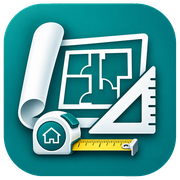

Querido Arquiteto
Editor de plantas e maquetes
iPhone
No Safari: Compartilhar → Adicionar à Tela de Início. Desative Abrir como app web, quando disponível.
Android / Chrome
No Chrome: ⋮ → Adicionar à tela inicial ou Criar atalho.

Editor de plantas e maquetes
No Safari: Compartilhar → Adicionar à Tela de Início. Desative Abrir como app web, quando disponível.
No Chrome: ⋮ → Adicionar à tela inicial ou Criar atalho.